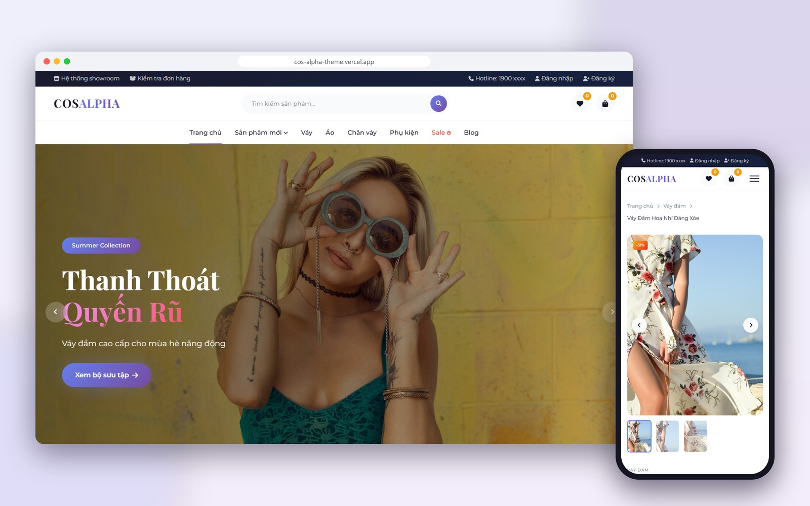
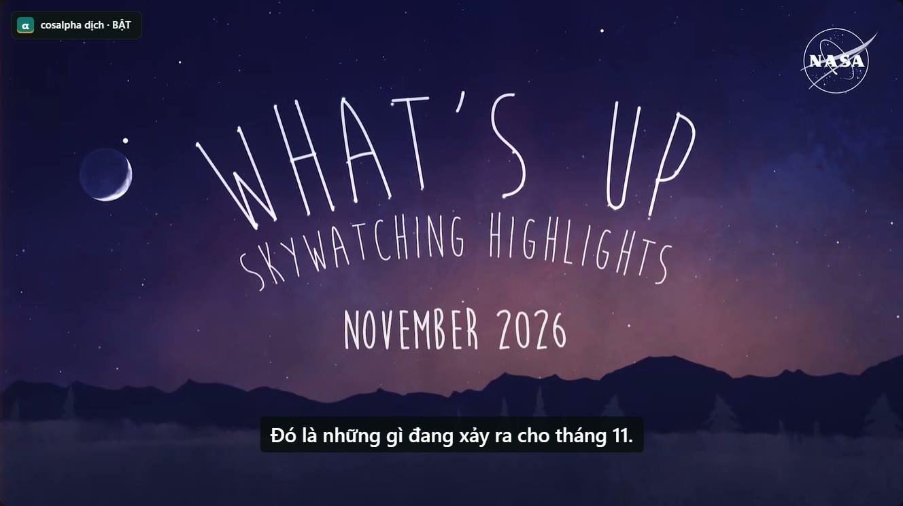

View image
View image
01 / Document intelligence
InvoiceFlow AI
Turning Vietnamese invoices and receipts into reviewable data through OCR, evidence validation, human approval before export and simulated ERP handoff.
Hi, I'm Hiển
AI & Automation Engineer
Engineering meets creative thinking.
I build AI tools, automate workflows and tell product stories through visuals, video & motion.

01 / Selected work
A selection of things I have built, with real interfaces and the technologies behind each experience.
View image
01 / Document intelligence
Turning Vietnamese invoices and receipts into reviewable data through OCR, evidence validation, human approval before export and simulated ERP handoff.
 View image
View image
02 / Creative tooling
A browser extension that turns AI image and video creation into a visual canvas: connect nodes, manage scenes, arrange clips and export video in the browser.
 View image
View image
03 / Technology for education
A nonprofit education project for Vietnamese speaking and listening practice, with criteria-based feedback and practice suggestions. AI assists; teachers decide.
First Prize — Huế City Science & Technology Creativity Competition
 View image
View image
04 / Interactive experience
A 3D world that runs in your browser. Rendering, interactions and gameplay built with code, from the first idea to an adventure ready to explore.

View image05 / E-commerce web
A responsive online store for Korean-style women's fashion. Shoppers can filter and search the catalog, pick a color and size on each product page, then check out with a cart, wishlist and spin-to-win discount codes.

View image06 / Browser extension
A browser extension that dubs foreign YouTube and Facebook videos into Vietnamese. It translates the captions, reads them aloud in a Vietnamese voice in time with the video, and lowers the original sound while it speaks.
02 / AI Creative Studio
I combine AI, visual thinking, thoughtful editing and motion graphics to create advertising content, product videos and stories that connect with people.
Concepts, key visuals and imagery shaped around the story and personality of each product.
Concept · Art direction · Product visualsFrom scripts and storyboards to AI-generated scenes, editing and finished product videos.
Script · Image to video · EditingMessages brought to life through animated typography, feature highlights and graphics for advertising.
Typography · Product explainers · Social adsSelected public work
Two publicly released projects Watch on X
Watch on X
Product video / HealAI
A video introducing how the HealAI device works, publicly released on the brand’s channel.
View the original on X Watch on YouTube
Watch on YouTube
Visual storytelling / K.T Audio
A music video where imagery and rhythm tell an emotional story. Publicly released on YouTube.
View the original on YouTubeBrand projects remain private unless approved for public release.
Discuss a project03 / Under the hood
From document processing to creative tools, each challenge calls for the right set of technologies.
Data processing, document recognition and validation steps connected into practical workflows.
Application interfaces, 3D experiences and tools that run directly in the browser.
Visual workflows for AI image and video generation, timeline editing and content export.
04 / Stay connected
An AI idea, a new tool or a product story — I would love to hear what you have in mind.
Source code & the projects I build.
Professional connections & project conversations.
Everyday updates & conversations.
Little moments from everyday life.
Connecting through data & AI.
External links open in a new tab.